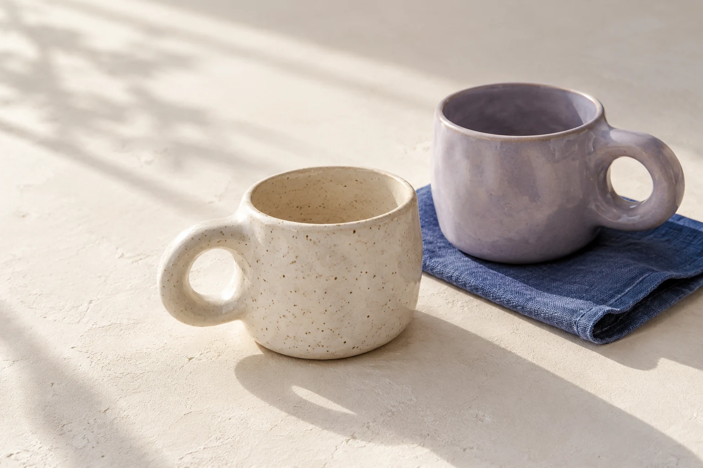

Кружка для вашего утра
Новая коллекция кружек ручной работы — для уютных утренних ритуалов.
Приглянулась одна? Напишите нам, чтобы узнать подробности и заказать.
Редакционный пример — не ответ бота
Сэм — ИИ-маркетолог в Telegram. Помогает превратить ваши идеи и факты в посты, контент-планы и рекомендации.
Есть бесплатный старт
Подготовленная демонстрация — не генерация на сайте.

Новая коллекция кружек ручной работы — для уютных утренних ритуалов.
Приглянулась одна? Напишите нам, чтобы узнать подробности и заказать.
Редакционный пример — не ответ бота
Условный бренд керамики
Напиши анонс новой коллекции кружек ручной работы для Telegram. Аудитория — любители керамики. Пригласи посмотреть коллекцию и написать нам для заказа. Не добавляй цены, скидки и сроки доставки. Тон — нейтральный и спокойный.
Редакционный пример — не ответ бота
В нашей мастерской появилась новая коллекция кружек ручной работы. Посмотрите формы и оттенки в подборке и выберите то, что подходит вашему дому.
Чтобы узнать подробности и оформить заказ, напишите нам в сообщения.
Один повод. Попробуйте другую подачу.
Это подготовленные варианты для сравнения. Сэм работает с вашим запросом в Telegram.
Не обязательно приходить с готовым текстом.
Достаточно задачи и нескольких деталей о вашем деле.
На телефоне или компьютере.
Без отдельного приложения для Сэма.
Перейдите в Telegram и нажмите «Начать». Выберите подходящий инструмент в меню бота.
Расскажите о бизнесе, аудитории и цели. Укажите факты, формат и тон, которые нужно сохранить.
Проверьте факты и рекомендации. Добавьте свой опыт, отредактируйте текст и используйте его в работе.
У Сэма есть бесплатный старт. Посмотрите доступные инструменты и попробуйте на своём проекте.
Попробовать в TelegramАктуальные цены, лимиты и условия продления проверьте в разделе тарифов перед оплатой.
Открыть тарифыОткройте бота в Telegram и нажмите «Начать». Бесплатный старт предусмотрен; актуальное количество запросов и доступные инструменты проверяйте в разделе тарифов. Перейти к условиям.
Опишите нишу, аудиторию, цель и формат. Для текста укажите тон и факты, которые нужно использовать. Для разбора страницы приложите ссылку и контекст. Проверьте рекомендации и факты перед применением.
Согласно политике конфиденциальности, сервис может обрабатывать ваш Telegram-идентификатор и сообщения для работы бота; в обработке участвуют Telegram и поставщики инфраструктуры. Сроки хранения и порядок отзыва согласия описаны в политике. Для запроса об удалении данных напишите в поддержку.
Вопросы управления тарифом решаются в боте. Условия оплаты и возврата приведены в оферте. Для отказа от оплаченного тарифа или запроса возврата обратитесь в поддержку. Условия продления выбранного тарифа проверьте до оплаты.
Нет, достаточно Telegram на телефоне или компьютере. Сайт откроет страницу @smm_platform_sam_bot, где нужно нажать «Начать».
Он помогает подготовить материалы и рекомендации. Вы определяете стратегию, проверяете точность результата и решаете, как использовать его в своём бизнесе.
Попробуйте открыть прямую ссылку на бота или найдите @smm_platform_sam_bot в Telegram. Если бот не отвечает, повторите запрос позже. При повторной ошибке напишите в поддержку.
Расскажите Сэму о своём деле и первой задаче.
Попробовать в Telegram